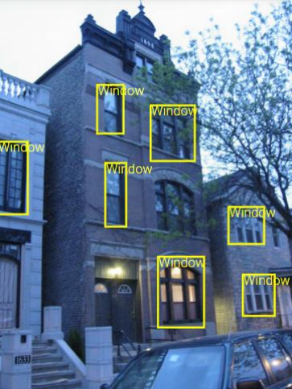
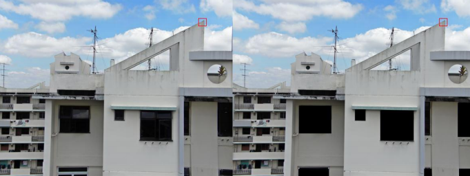
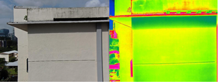

My internship at H3Dynamics
I did my 4th year internship at H3Dynamics. H3Dynamics is a Singaporean group leader in the field of cloud robotics and fully autonomous drones. This company offers an autonomous building inspection service. I joined the department responsible for this service from September 7th 2020 to February 12th 2021. I worked on several different projects during these 6 months of internship.
Automatic hiding of windows
 The goal of one of my projects was to be able to automatically hide the windows of a building in order to respect the privacy of its residents. I first wrote a program to automatically detect windows on an image using computer vision. Then I had to code the part that automatically draws a black rectangle on these windows. 
Metadata extraction
 I made a program in Java to retrieve the metadata of images taken by drones to store them in a JSON file. These drones take normal images and thermal images. These images are not sorted and therefore we cannot know which normal images correspond to their thermal images. With the metadata of these images, I added to the Java program a functionality to group the "color" images with the thermal images that correspond to them.
Smaller projects throughout the internship
During the internship, I created REST APIs with Node.JS and explained their functioning so that my colleagues could easily use these previously created programs. I also wrote Python scripts to be able to do Data Cleaning on JSON files. For most of the projects I did, most of the time there was no resource to help me on the internet like for example with the normal and thermal image grouping. These projects were more difficult but it helped me improve my problem solving skills.
Working in Singapore
Singapore is a multicultural city-state as there are three different ethnicities living there (Chinese, Malay and Tamil). The language that is most spoken is English. English has been chosen to unite these communities. Thus, the working language is English. I already had a good knowledge of English but during this internship I was able to acquire a practical knowledge of it.
During this internship I learned to adapt to a new culture by working with people from different cultures. Working with these people allowed me to learn more about teamwork and how to interact with them.